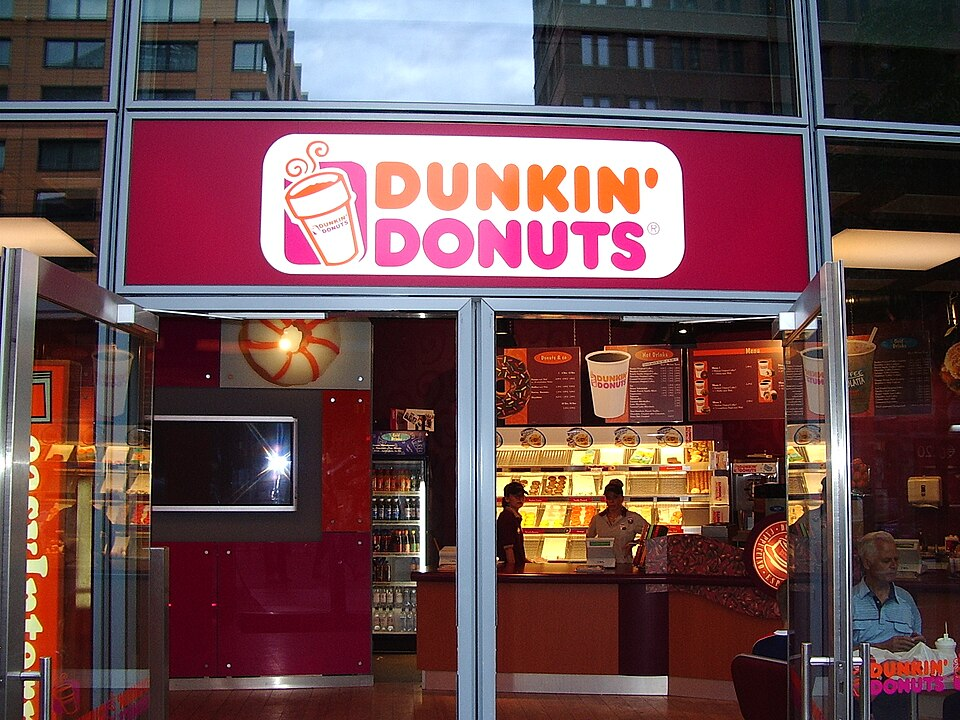

홈 > 브랜드 매거진 > 국립현대미술관
국립현대미술관 National Museum of Modern and Contemporary Art, Korea (MMCA)
한국 근현대 미술을 수집·보존·전시하는 국립 미술관
산업 분야 브랜드·비즈니스 · 공개 등급 자료 기반 · 브랜드 평가 4.2 ★
한눈에 보는 브랜드
국립현대미술관은 1969년 경복궁 내에서 개관하며 한국 최초의 국립 미술관으로 출범했다. 이후 1973년 덕수궁 석조전으로 이전했고, 1986년 과천에 대규모 본관을 건립하며 국립 미술관으로서의 위상을 갖췄다.
1998년 덕수궁관을 근대미술 전문 공간으로 재개관했고, 2013년에는 서울 종로구 소격동에 서울관을 개관해 도심 접근성을 강화했다. 2018년에는 청주에 수장고 겸 개방형 보존공간인 청주관을 개관하며 4관 체제를 완성했다.
브랜드 아이덴티티
단일 관에서 서울·과천·덕수궁·청주 4관 체제로 확장하며 수집·보존·전시·수장 기능을 지역적으로 분산 배치한 것이 특징이다. 근대미술과 현대미술을 아우르는 국가 대표 미술 아카이브 역할을 수행한다.
다관 체제 구축을 통한 수집·보존·전시 기능의 공간적 분산과 접근성 확대
타임라인
BI/CI 변천사
자주 묻는 질문
국립현대미술관의 브랜드 아이덴티티는 무엇인가요?
단일 관에서 서울·과천·덕수궁·청주 4관 체제로 확장하며 수집·보존·전시·수장 기능을 지역적으로 분산 배치한 것이 특징이다.
함께 읽을 브랜드
Mo
Mode
브랜드·비즈니스 · 편집 검수Mode모드는 2013년 데릭 스티어, 벤 스탠실, 조시 퍼거슨이 샌프란시스코에서 설립한 데이터 분석 협업 플랫폼이다. 에스큐엘 워크벤치로 질의를 작성하고 그 결과를 파이썬...
 브랜드·비즈니스 · 편집 검수National
브랜드·비즈니스 · 편집 검수NationalNational는 1973년에 기록된 From Japan 계열의 브랜드 아이덴티티 사례입니다. TBC가 아이덴티티 작업의 디자이너로 기록되어 있습니다. 공개 섹션 정...
As
Assembly
브랜드·비즈니스 · 편집 검수AssemblyAssembly는 2018년에 기록된 Designed by Ragged Edge 계열의 브랜드 아이덴티티 사례입니다. Ragged Edge가 아이덴티티 작업의 디자이...
 브랜드·비즈니스 · 편집 검수Decathlon
브랜드·비즈니스 · 편집 검수Decathlon데카트론은 1976년 프랑스 릴에서 출발한 스포츠용품 대형 소매·제조 기업으로, 다양한 종목의 장비와 의류를 한 매장에 모아 합리적 가격에 제공하는 모델을 구축했다....

브랜드·비즈니스 · 편집 검수Dunkin'Dunkin'는 2018년에 기록된 Designed by jkr 계열의 브랜드 아이덴티티 사례입니다. jkr, Colophon가 아이덴티티 작업의 디자이너로 기록되어...
He
Helsinki
브랜드·비즈니스 · 편집 검수Helsinki핀란드 헬싱키 시는 2017년 도시 전체를 아우르는 통합 비주얼 아이덴티티를 새로 도입한다. 그 전까지 시의 여러 부서와 사업은 제각각의 로고와 표기를 사용했고, 일...
 브랜드·비즈니스 · 편집 검수미쓰비시 자동차(Mitsubishi Motors)
브랜드·비즈니스 · 편집 검수미쓰비시 자동차(Mitsubishi Motors)미쓰비시 자동차(Mitsubishi Motors Corporation, MMC)는 일본을 대표하는 자동차 제조사로, 세 개의 빨간 마름모를 겹친 스리 다이아몬드 엠블...
 브랜드·비즈니스 · 자료 기반신한금융그룹(Shinhan Financial Group)
브랜드·비즈니스 · 자료 기반신한금융그룹(Shinhan Financial Group)신한금융그룹(Shinhan Financial Group)은 2001년 설립된 한국 최초의 민간 금융지주회사다.